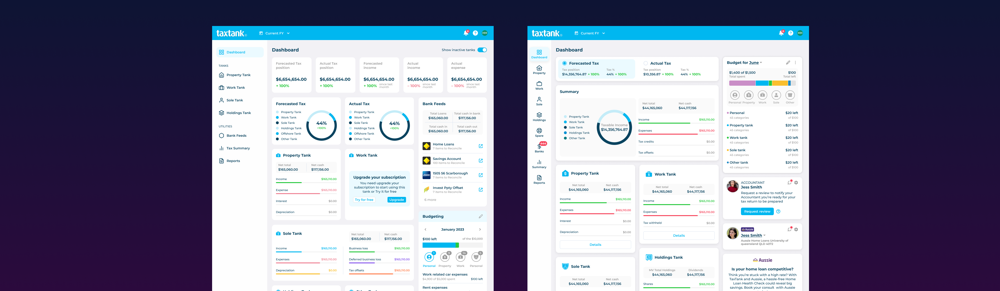
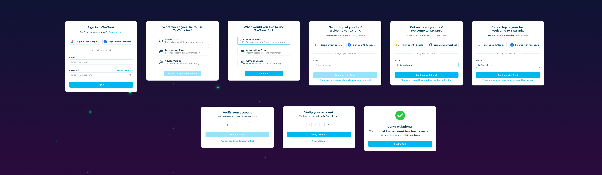
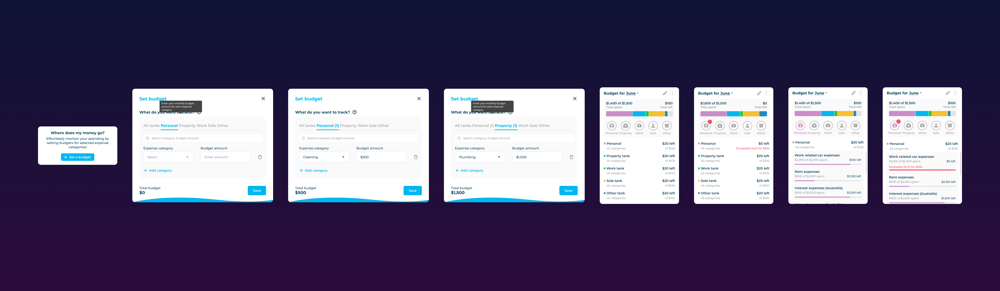
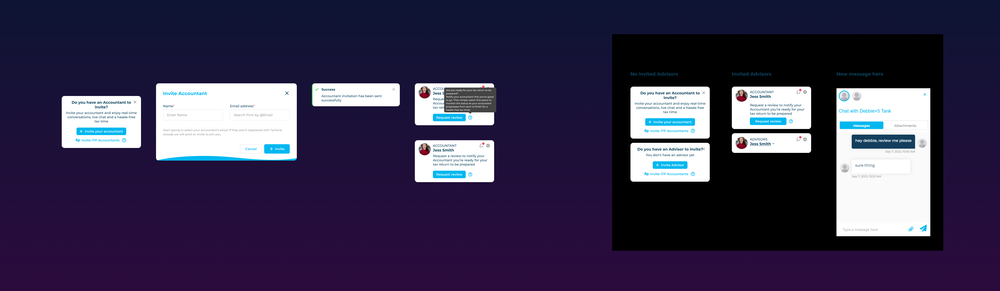

How I redesigned a complex tax dashboard so users could finally understand it.
TaxTank had everything a user needed. The problem was the interface didn't help anyone understand what any of it meant, or what to do next.

The interface had everything. It just didn't help users understand it.
TaxTank is an Australian tax management platform where users track income, expenses and tax positions across multiple entities — called Tanks. The product was feature-complete. But every piece of financial information competed equally for attention, and users couldn't tell what mattered, what was urgent, or what to do next.
Two competing tax widgets — Forecasted and Actual — sat at the same visual weight. Users couldn't immediately answer: am I owing more or less than expected?
News, budgeting, expert CTA, accountant widget and financial year close all shared one column with equal emphasis and no priority order.
Locked Tanks and active ones sat in the same card grid at the same size. A user with 2 active Tanks had to process 5 cards equally.
8 nav items at the same level with no grouped structure. Reports were hidden behind a collapsed toggle. The sidebar didn't reflect the user's mental model.

A clearer hierarchy, a calmer dashboard.
Getting started required a clear path from the first screen.
TaxTank serves different types of users — individuals, accounting firms and advisor groups. The onboarding flow was redesigned to route each type to the right experience from the start, before collecting any account details.

Login → Role selection → Account type → Email → Verification → Success
Setting a budget became a guided, step-by-step task.
The original dashboard surfaced a "Set a budget" prompt without a clear pathway. The redesign introduces a modal flow — from category selection to amount entry — and immediately shows the result as a live budget tracker card in the dashboard panel.

Dashboard trigger → Category selection → Budget entry → Live tracker card
Inviting your accountant became a defined, trusted flow.
TaxTank supports accountant and advisor relationships. The redesign formalises this with a clear invite flow and a dedicated communication panel — so users can share data, receive review status updates and chat with their advisor in one place.

Invite modal → confirmation → accountant card · Advisor communication panel
No post-launch data. These are design outcomes, not measured metrics.
The hardest decisions in this project were not about adding features — they were about deciding what not to show. A dashboard that shows everything equally is not informative; it's overwhelming. Every element that competed for attention was a decision that had been deferred.
FinTech products carry a specific responsibility: users arrive with anxiety about money. A clear, calm, prioritised interface is not just better UX — it is the product.